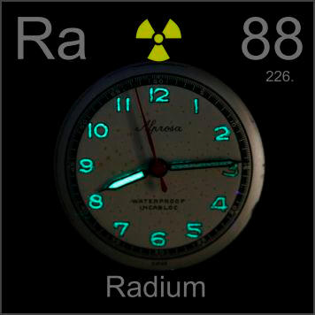

HOME
PREVIOUS
NEXT

Radium
Atomic Weight: 226[note]
Density: 5 g/cm3
Melting Point: 700 °C
Boiling Point: 1737 °C
Radium was widely used in self-luminous clock and watch hands, until too many watch factory workers had died of it. This antique watch is still quite radioactive, and will stay that way for thousands of years.